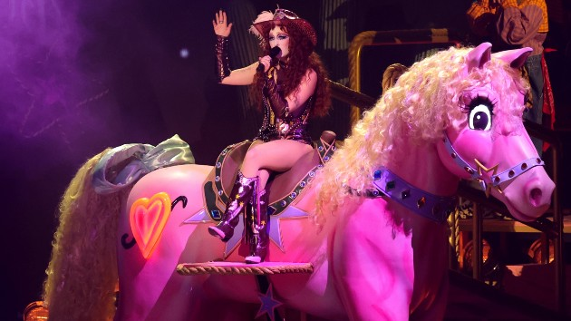
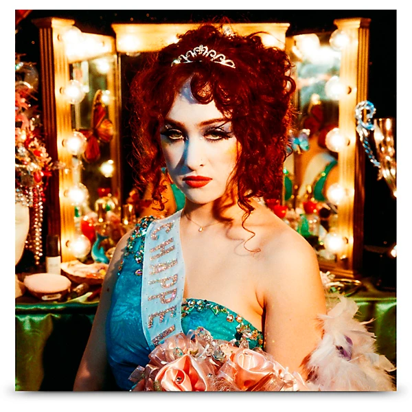
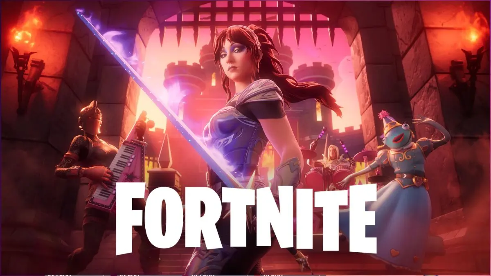

Navegación
De los primeros demos caseros en Missouri a los charts globales, la discografía de Chappell Roan cuenta la historia de una artista que se reinventó sin perder su esencia.

Su primer trabajo oficial, lanzado bajo Atlantic Records cuando tenía apenas 19 años. Un EP de cinco canciones de pop oscuro y melancólico que incluía su primera composición pública, "Die Young". La lista reflejaba una artista todavía buscando su voz: más contenida, más convencional, pero con destellos de lo que vendría.
Canciones: Die Young · Meantime · Good Hurt · Last Girl · School Nights

Después de ser despedida de Atlantic Records en 2020, Chappell comenzó a lanzar música de forma independiente junto al productor Dan Nigro. Esta etapa fue una reinvención total: nueva imagen inspirada en el drag, letras más audaces y una identidad queer que pasó a ser central en su propuesta artística.
"Pink Pony Club" (2020) — El punto de quiebre. Inspirada en la primera visita de Roan a The Abbey, un bar gay de West Hollywood, esta canción tardó años en explotar pero terminó siendo su carta de presentación global. Alcanzó más de 900 millones de reproducciones en Spotify.
"Naked in Manhattan" (2022) — Primer lanzamiento abiertamente queer de su nueva era. Una declaración de identidad y libertad.
"My Kink is Karma" (2022) — Una canción de venganza con actitud, que consolidó su nueva imagen teatral y desenfadada.
"Casual" (2023) — Crítica a un romance sin compromiso, inspirada en una relación breve durante la pandemia. Producida junto a Nigro, fue una de las primeras canciones en mostrar su madurez como compositora.

Lanzado el 22 de septiembre de 2023 bajo Amusement Records / Island Records, este álbum debut fue el resultado de años de trabajo junto al productor Dan Nigro. Recibió críticas muy positivas por su mezcla de synth-pop, glam y pop de los 80, y por su representación audaz de la identidad queer. Al mes siguiente de su lanzamiento, Billboard nombró a Roan una de las 10 artistas emergentes más destacadas del año.
El álbum debutó en el puesto número 2 del Billboard 200 y fue ganando terreno a lo largo de 2024, a medida que sus singles se volvían virales y Chappell se convertía en un fenómeno global.
Lista de canciones:

"Good Luck, Babe!" (2024) — El sencillo que la catapultó al estrellato mundial. Llegó al número 2 en el UK Singles Chart y superó los 1.500 millones de reproducciones en Spotify. La canción, producida junto a Nigro, es una carta a una ex que se niega a admitir su propia identidad queer. Fue nominada a los Grammy en las categorías Grabación del Año, Canción del Año y Mejor Interpretación Pop Solista.
"The Giver" (2025) — Lanzada el 14 de marzo de 2025, fue la primera canción nueva después del éxito masivo de su álbum debut. Fue presentada en vivo por primera vez en Saturday Night Live en noviembre de 2024, con un toque country que sorprendió a sus fanáticos.
"The Subway" (2025) — Lanzada el 31 de julio de 2025, más de un año después de que la interpretara en vivo por primera vez en el Governor's Ball de 2024. Fue nominada en los Premios Grammy 68 en las categorías Grabación del Año y Mejor Interpretación Pop Solista.

Además de su discografía propia, Chappell Roan tuvo una presencia destacada en medios y proyectos especiales. Apareció en el especial navideño de Netflix A Nonsense Christmas with Sabrina Carpenter (diciembre de 2024) y fue invitada musical en Saturday Night Live (noviembre de 2024) junto al conductor John Mulaney. También fue incorporada al universo del videojuego Fortnite, donde su imagen y música llegaron a millones de jugadores en todo el mundo.